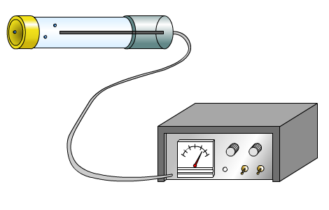
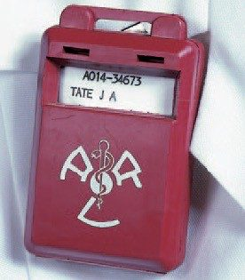
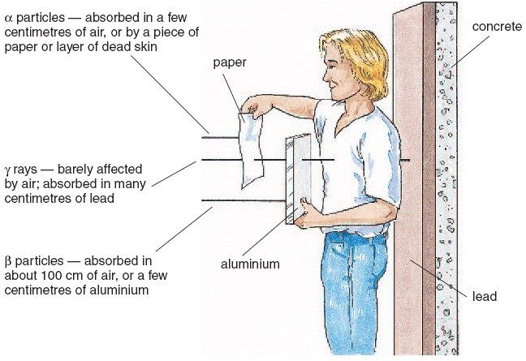
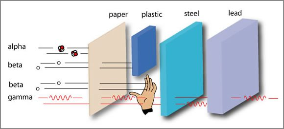
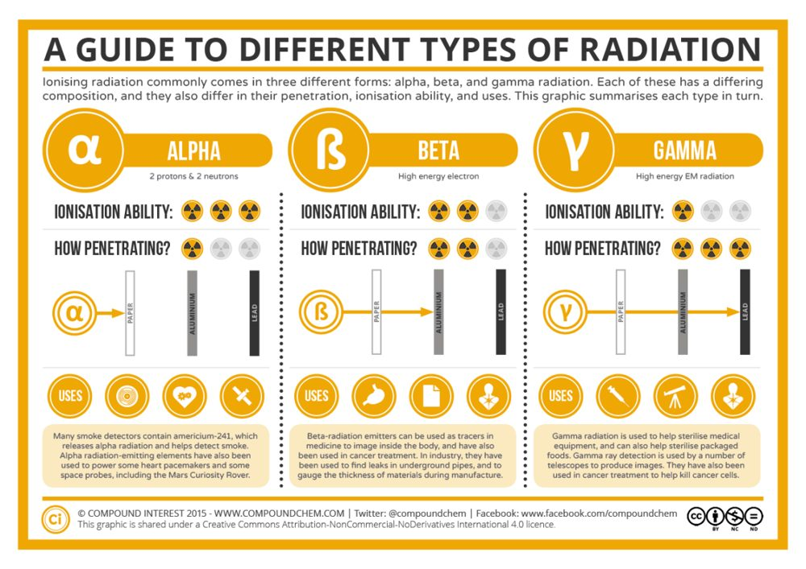
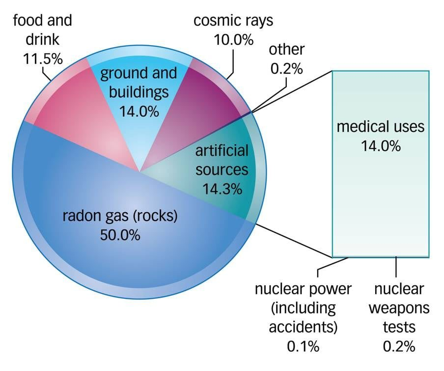
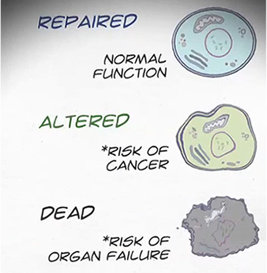

How is radiation detected?
If we can't see, taste, smell or hear radiation, how is it detected?
- A Geiger counter uses a high-voltage tube to measure the amount of radiation. A speaker clicks for each particle or burst of radiation detected.
- Film badges or a thermoluminescent dosimeter (TLD) measure low-level radiation exposure for workers such as medical staff.


Penetrating and ionising ability
Alpha particles, beta minus particles and gamma rays all come from the nucleus, and all have enough energy to knock electrons off other atoms. This forms ions, which can react chemically and may lead to cancers.



- The most penetrating type of radiation is .
- The most ionising type of radiation is .
- Alpha radiation is most dangerous when it is .
Alpha particles are very ionising but can't get through skin or paper. Once inside the body (by eating or breathing in a source), they cause a lot of damage to nearby cells.
Background radiation
We are surrounded by sources of radiation, both natural and artificial. Background radiation is radiation that is always present. It comes from sources such as the Sun, space, soil, rocks, living organisms, medical procedures and the materials used in buildings.
- The atmosphere contains radon gas.
- The Sun is a source of cosmic radiation. Air travel and altitude increase your exposure to cosmic radiation.
- Food and drink contain radioisotopes.
- Building materials, especially concrete, contain radioisotopes.
- Some cancer treatments use radioisotopes.
- Rocks and soil contain decaying radioisotopes.

According to the pie chart, what is the largest source of background radiation?
Health effects of radiation
Radioisotopes can damage human cells, but they can also be used to help diagnose and treat disease. The dangerous part of radiation is its ability to ionise atoms (remove electrons).
Radiation exposure can be external or internal:
- External exposure is when the radioactive source is outside the body. For example, gamma rays can pass through the body, releasing energy as they go.
- Internal exposure is when radioactive material gets into the body by eating, drinking, inhalation or injection.
Ionising radiation has enough energy to affect the atoms in living cells and change their DNA. If this damage isn't repaired correctly, a cell could die or become cancerous.

- Exposure to very high levels of radiation, such as being close to an atomic blast, can cause acute effects such as skin burns and radiation sickness. It can also cause long-term effects such as cancer and cardiovascular disease.
- Exposure to low levels of radiation doesn't cause immediate health effects, but it can increase the risk of getting cancer from other causes.
Radiation dose
The outcome depends on the dose, measured in sieverts (Sv) or millisieverts (mSv).
| Outcome or circumstance | Equivalent dose |
|---|---|
| 100% lethality (close to a radiation emergency) | 10 000 mSv (10 Sv) |
| 50% lethality (close to a radiation emergency) | 4000 mSv (4 Sv) |
| Acute radiation syndrome; cancer risk increases from 22% to 27% | 1000 mSv (1 Sv) |
| Damage to blood cells | 500 mSv |
| Relocation threshold (projected dose from contamination over one year) | 20 mSv |
| CT scan of the chest | 5 mSv |
| Background radiation in Australia for one year | 1.7 mSv |
| Australian uranium mine workers | 1 mSv |
| Chest X-ray | 0.06 mSv |
| Flight from Melbourne to London | 0.11 mSv |
| Dental X-ray | 0.005 mSv |
Explain why ionising radiation can lead to cancer.
Ionising radiation has enough energy to remove electrons from atoms in living cells, forming ions. This can damage the cell's DNA. If the damage isn't repaired correctly, the cell may die or may start dividing uncontrollably, becoming cancerous.